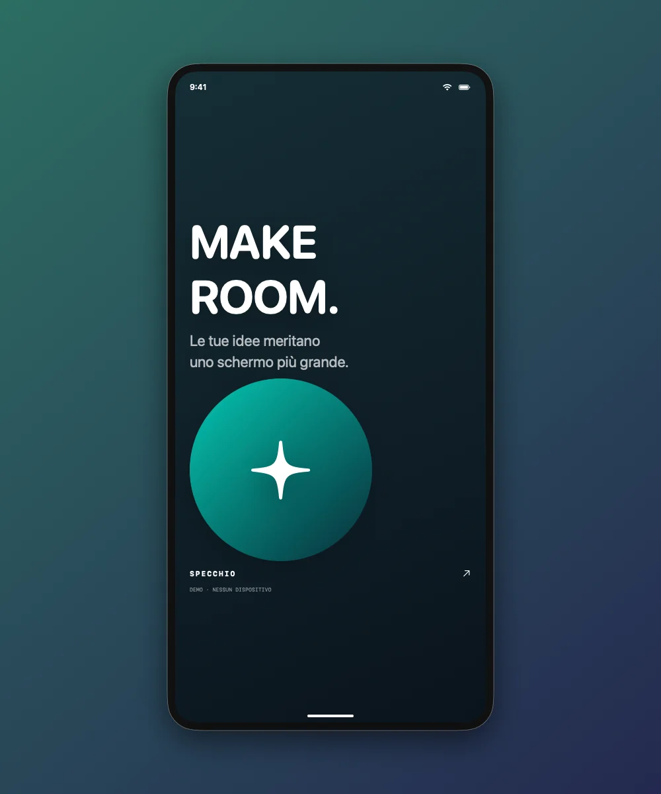
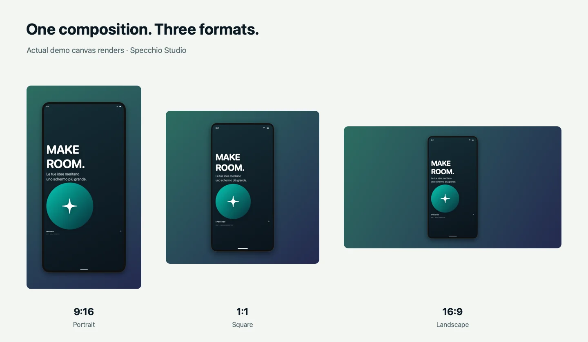

Un’app nativa per Mac · Anteprima sperimentale gratuita
Il tuo dispositivo.
Pronto da condividere.
Trasforma le acquisizioni di iPhone e iPad in demo di prodotto, contenuti e segnalazioni bug più chiare. Tutto sul tuo Mac.
macOS 14+ · Apple Silicon · Non notarizzata
Qualcosa in più di una registrazione.

Acquisire lo schermo è solo l’inizio.
Dai al tuo lavoro il contesto che merita. Incornicia una demo, spiega un problema o prepara la stessa idea per tre destinazioni diverse.
Tre modi per usarla
Da “guarda qui”
a “ecco tutto.”
Dai alla prossima demo lo spazio che merita.
Acquisisci iPhone o iPad via USB o con il ricevitore wireless, oppure scegli una finestra o uno schermo del Mac. Prima registri, poi componi il risultato.
- Registra l’originale in MOV H.264 o HEVC
- Aggiungi sfondo, cornice e taglio temporale in esportazione
- Mantieni l’audio della sorgente quando disponibile
Registrazione originale ed esportazione composta sono due passaggi distinti.
Rendi il problema più facile da capire.
Affianca passaggi, risultato atteso e comportamento osservato a uno screenshot annotato. Esporta una cartella con Markdown, JSON e immagini allegate.
- Annota ed estrai testo con OCR locale
- Disegna maschere opache o verifica i suggerimenti OCR
- Gli originali non oscurati sono esclusi per impostazione iniziale
Controlla testo e allegati prima di condividerli. Il rilevamento può non individuare tutti i dati sensibili.
Una composizione. Più posti in cui condividerla.
Prepara insieme contenuti verticali, quadrati e orizzontali, con copertina e riepilogo dei file. Salva uno stile per dare continuità alle esportazioni successive.
- Pacchetti di immagini o video in 9:16, 1:1 e 16:9
- Una copertina con titolo facoltativo
- Sfondi, cornici e orientamento riutilizzabili
Preset video: 1080 × 1920, 1080 × 1080 e 1920 × 1080.
Per i posti in cui pubblichi
Una sola idea.
Tre proporzioni.
La stessa grafica dimostrativa, composta in tre esportazioni reali del canvas. La sorgente resta interamente visibile.

Condividi il lavoro. Controlla i dettagli.
Alcune cose
restano tue.
Oscura le aree sensibili prima dell’esportazione. L’app applica rettangoli opachi ai pixel delle immagini esportate; l’OCR locale può suggerire dettagli da verificare.
Illustrazione con dati fittizi. Nell’app le maschere video sono fisse per tutta la clip e non seguono contenuti in movimento. Originali, audio e campi scritti nel report non vengono oscurati automaticamente.
Prova questa illustrazione
Alex Example
Indirizzo email
Progettata e sviluppata da Elia Gentili
Un’idea, seguita
fino ai dettagli.
Specchio Studio è la mia esplorazione di un flusso completo su Mac: dall’acquisizione dei dispositivi all’elaborazione multimediale nativa, fino alle esportazioni e ai piccoli dettagli che rendono utile un’app.
Sviluppata con SwiftUI, AppKit, AVFoundation, VideoToolbox e Vision. Pensata per l’elaborazione locale, senza account nell’app.
Esplora il mio lavoro su GitHub ↗Prima di chiedertelo
I dettagli utili.
Posso già scaricarla?
Sì. L’anteprima sperimentale gratuita v1.3.1-preview.1 include ZIP dell’app, sorgenti corrispondenti e checksum. Ha firma ad hoc e non è notarizzata; la verifica Gatekeeper rifiuta questa build. Prima di scaricarla, leggi requisiti, limiti e punti aperti sui diritti nella pagina della release.
Su quali sistemi funziona?
Il target attuale è macOS 14 o successivo su Apple Silicon. L’app acquisisce sorgenti iPhone, iPad e Mac. Non ci sono versioni per Windows o Linux. L’interfaccia attuale dell’app è in italiano.
I miei contenuti vengono inviati a un servizio cloud?
Acquisizione, OCR e composizione avvengono localmente sul Mac, senza account nell’app. Questo sito non ha analytics, pubblicità, font remoti o contenuti incorporati di terzi. GitHub lo ospita e gestisce i normali dati delle richieste.
Posso comporre il video mentre registro?
L’app registra prima la sorgente. Poi apri lo strumento di composizione video per aggiungere cornici, sfondi, taglio e maschere privacy fisse. I video composti vengono esportati in H.264.
Cosa manca ancora da verificare?
Restano altre prove con dispositivi fisici, sessioni lunghe e primo avvio su un altro Mac. La build locale attuale non è notarizzata. Prima di un rilascio stabile vanno inoltre completate le verifiche su provenienza di codice e risorse, disponibilità del nome e diritti di distribuzione.
Come posso lasciare un suggerimento?
Usa il repository pubblico del sito per suggerimenti sul progetto e sulla sua presentazione. Non inserire dati personali o registrazioni private in una issue pubblica.
Specchio Studio × Elia Gentili
Un buon lavoro merita
di essere raccontato bene.
Prova la build sperimentale per Mac, leggi i suoi limiti e raccontami dove questo flusso ti sarebbe utile.
Scarica l’anteprima gratuita ↗Anteprima sperimentale gratuita · v1.3.1-preview.1